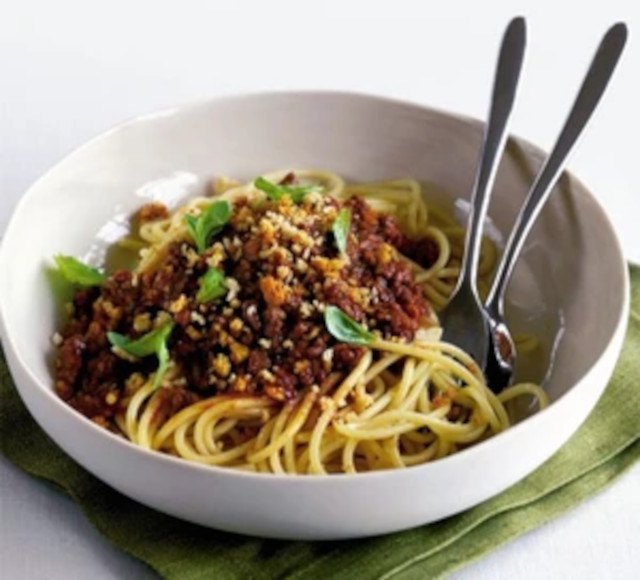

Healthy spaghetti bolognese

Description
Make a deliciously wholesome
spaghetti bolognese in less than half an hour with our simple recipe
Ingredients
- 1 tbsp olive oil
- 1 small carrot, chopped
- 400g can plum tomatoes
- ½ bunch basil, plus extra leaves, to serve
- ½ recipe Multi mince (see 'Goes well with' below)
- 400g spaghetti or other long pasta
- 25g toasted breadcrumbs
Steps
- Heat the oil in non-stick frying pan.
Tip in the carrot and cook for 5 mins to soften.
Scoop out the tomatoes from the can and add to the pan,
and cook for 5 mins more.
Pour over the tomato juice and basil,
then simmer for 15 mins. Whizz together in a blender until smooth.
Can be frozen for up to three months.
- Heat through with the Multi mince. Cook spaghetti according to pack instructions.
Reserve some of the cooking water, drain and tip the pasta into the pan along with
the sauce.
Toss together, thinning with pasta water, if needed,
and serve with the extra basil leaves on top and the breadcrumbs.